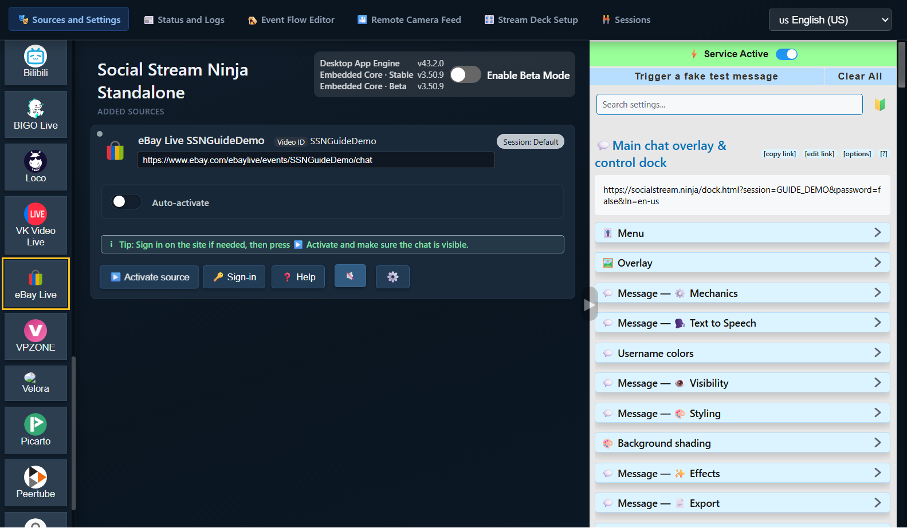
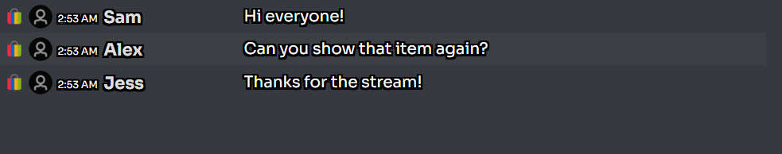
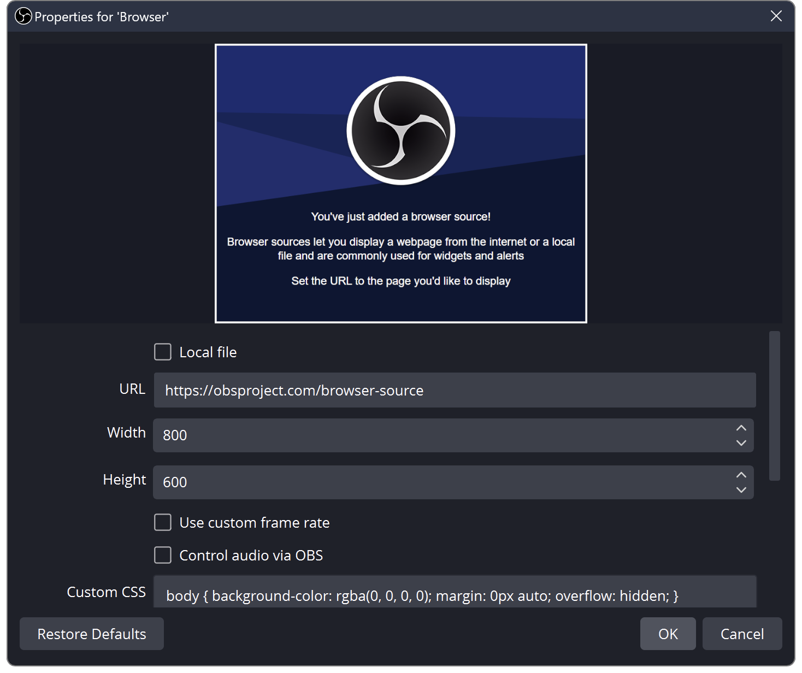

Kaynak = yakaladığınız sohbet. Panel = bu mesajları gösteren SSN penceresi. OBS = bunları yayınınızda gösterdiğiniz yer.
SSN'yi çalıştırmak için bir yöntem seçin. İkisine birden ihtiyacınız yok.
1. SSN'yi açın ve etkinleştirin
Masaüstü uygulamasını indirin ve bilgisayarınıza kurun, ardından şunu açın: Social Stream Ninja.
Şuraya gidin: Kaynaklar ve ayarlar. Sağ panelde şu yazıyorsa: Hizmet devre dışı, bir kez tıklayın. Şunu göstermelidir: Hizmet etkin.
Şunu kurun: Chrome Web Mağazası'ndan Social Stream Ninja (Chrome veya Edge tarayıcısında).
Tarayıcınızdaki Uzantılar (yapboz parçası) düğmesine, ardından şu uzantıya tıklayın: Social Stream Ninja. Bir dahaki sefer için sabitleyin.
Açılır menüde şu yazıyorsa: Uzantı devre dışı, bir kez tıklayın. Şunu göstermelidir: Uzantı etkin.

Masaüstü uygulaması açılmıyor mu?
Windows, macOS veya Linux için açılış yönergelerini izleyin. SSN'yi kurmak, bir sohbeti otomatik olarak bağlamaz.
2. Okumak istediğiniz sohbeti ekleyin
Şurada: Kaynaklar ve ayarlar, soldaki düğmelerden platformunuzu seçin. Gerekirse listeyi kaydırın.
eBay Live örneği: tıklayın: eBay Live, canlı etkinliğinizin bağlantısını yapıştırın, ardından şuna tıklayın: Devam.

Yeni kaynağınız şu bölümde görünür: Eklenen kaynaklar. Şuna tıklayın: Kaynağı etkinleştir. Site oturum açmanızı isterse şunu kullanın: Oturum aç, ardından kaynağı yeniden etkinleştirin.

Bu kontroller nerede?


Şu tarayıcıyı kullanın: uzantının kurulu olduğu aynı tarayıcı. Bu tarayıcıda canlı yayının sohbet sayfasını açın. Gerekirse platformda oturum açın ve bu sekmeyi açık tutun.
eBay Live örneği: eBay'de canlı etkinliğinizi açın ve sohbetinin görünür olduğundan emin olun. Ürün ilanı veya satıcının mağaza sayfası canlı sohbet değildir.
Bu yöntemde SSN'ye bir kaynak satırı eklemezsiniz: uzantı, açtığınız desteklenen sohbet sayfalarını yakalar.
Kontrol edin: asıl platformun sohbet sayfasında yeni mesajların göründüğünü görebiliyorsunuz.
Başka bir platform mu kullanıyorsunuz?
Platformun canlı sohbet veya açılır sohbet bağlantısını kullanın. Platformunuzun kurulum adımlarını bulun.
3. SSN panelinizi açın
SSN ayarlarına dönün uygulamanın sağ tarafındatarayıcı uzantısının simgesine tıklayarak. Şunu bulun: Ana sohbet katmanı ve kontrol paneli.
Bu başlığın altındaki uzun bağlantıya tıklayın. Bu, sohbet panelinizi açar. Şunu kullanın: bağlantıyı kopyala başka bir yere yapıştırmanız gerektiğinde.

Birinden yeni bir sohbet mesajı göndermesini isteyin veya asıl platformdan kendiniz gönderin. Mesaj SSN panelinde görünmelidir.


Sohbet burada görünüyor mu? Bağlantınız kuruldu. TTS veya OBS ayarlarını değiştirmeden önce bunun çalıştığından emin olun.
Panelim boş
SSN'nin etkin, kaynağın çalışır durumda ve sohbetinin görünür olduğunu kontrol edin. Şunu gönderin: yeni mesaj; eski mesajlar yeniden oynatılmayabilir. Ekran görüntüsündeki veya başka bir oturumdaki bağlantıyı değil, aynı SSN uygulamasının veya uzantısının panel bağlantısını açın.
Gerekirse şunu kullanın: Sahte bir test mesajı tetikleyin SSN ayarlarında. Bu görünür ama gerçek sohbet görünmezse kaynağı araştırın. İkisi de görünmezse panel bağlantısını ve bağlantı durumunu kontrol edin.
4. İsteğe bağlı: sohbeti sesli okuyun
Evet; TTS, gelen sohbet mesajlarını tek tek otomatik olarak okuyabilir. eBay'in kendi TTS özelliğine ihtiyacı yoktur. SSN'nin metni zaten alıyor olması gerekir.
SSN ayarlarına dönün ve ana panel bağlantınızın altında şu bölümü genişletin: Mesaj — Metinden Konuşma. Şunu açın: Panelde TTS'yi etkinleştirin:

Bu bölümde aşağı kaydırın. Şunu seçin: Piper TTS şu bölümde: TTS hizmet sağlayıcısı, ardından bir ses seçin. API anahtarı veya ücretli hesap gerekmez.

Ana panel bağlantınızı tekrar kopyalayın. Güncellenmiş bağlantı TTS'yi içerir. Daha önce kopyaladığınız bağlantı yeni ayarları kendiliğinden almaz.
Sesi yalnızca bilgisayarımda duymak istiyorum
Güncellenmiş panel bağlantısını açın ve yeni bir sohbet mesajı gönderin. Tarayıcınız sesi engelliyorsa sayfanın içine tıklayın. OBS'ye ihtiyacınız yoksa burada durabilirsiniz.
5. Panelinizi OBS'ye ekleyin
- OBS sahnenizde şunu bulun: Kaynaklar. Şuna tıklayın: + → Tarayıcı. Şu adı verin: SSN Chat, ardından şuna tıklayın: Tamam.
- Varsayılan URL adresini az önce kopyaladığınız panel bağlantısıyla değiştirin. Yerel dosya seçeneğini işaretsiz bırakın.
- TTS için şu seçeneği işaretleyin: Sesi OBS üzerinden denetle. Şuna tıklayın: Tamam.


OBS önizlemesindeki sohbet kutusunu sürükleyerek taşıyın. Boyutunu değiştirmek için bir köşesini sürükleyin. Bu kaynağı zaten eklediyseniz şunu açın: Özellikler ve eski URL'yi değiştirin.
Sohbeti göstermeden yalnızca sesi istiyorum
Tarayıcı Kaynağını etkin tutun, ancak opak bir kamera veya oyun kaynağının arkasına yerleştirin ya da tuvalin dışına taşıyın. Sesini kullanırken göz simgesini kapatmayın veya kaynağı bellekten kaldırmayın.
Peki OBS Özel Tarayıcı Paneli?
Bu, sizin kullanacağınız bir kontrol panelidir. Yukarıda anlatılan sahne öğesi olan Tarayıcı Kaynağı ile aynı şey değildir. TTS sesini OBS'ye aktarmak için Tarayıcı Kaynağı ile başlayın. Paneller ve katmanlar hakkında daha fazlası.
6. Canlı yayına başlamadan önce sesi kontrol edin
- Başka bir sohbet mesajı gönderin. Şu göstergede hareket olup olmadığına bakın: SSN Chat OBS'nin şu bölümünde: Ses Mikseri.
- Sesi kendiniz duymak için şunu açın: Düzenle → Gelişmiş Ses Özellikleri. Kaynağı şu şekilde ayarlayın: İzle ve Çıkış Ver.
- OBS'de kısa bir kayıt yapıp oynatın. Mesajı bir kez duymalısınız.
Sohbet görünüyorsa ve kayıtta ses varsa hazırsınız. İzleyicilerin sesi duyabilmesi için canlı yayınınızın OBS sesini kullanması gerekir; SSN, ayrı bir telefon yayınına otomatik olarak ses eklemez.
Ses yok mu, yoksa iki kez mi duyuluyor?
Gösterge hareket etmiyorsa: yeni URL'yi, TTS anahtarını, ses indirmesini ve Sesi OBS üzerinden denetle seçeneğini kontrol edin. OBS'de Sistem TTS yerine Piper ile başlayın.
Gösterge hareket ediyor ama kayıt sessizse: sessize alma durumunu ve kayıt izi atamalarını kontrol edin.
Sesi iki kez duyuyorsanız: ses veren fazladan paneli veya tarayıcıyı kapatın ya da TTS'sini devre dışı bırakın. Hem OBS kaynağını hem de izlenen sesinin ikinci bir kopyasını kaydetmekten kaçının.
Sesleri karşılaştırın ve TTS sorunlarını giderin · OBS kaynak yardımı · OBS ses yardımı
Bir sonraki yayınınızda
SSN'yi açın, kaynağınızı etkinleştirin (veya sohbet sekmesini açın) ve OBS'yi açın. eBay bir sonraki yayına yeni bir etkinlik bağlantısı verirse kaynağı bu etkinlikle güncelleyin. Aynı SSN oturumundaki panel bağlantısını kullanmaya devam edin.
Daha gelişmiş seçenekler
Diğer ses sağlayıcıları · Kendi TTS sunucunuzu çalıştırın · Tüm kılavuzlar